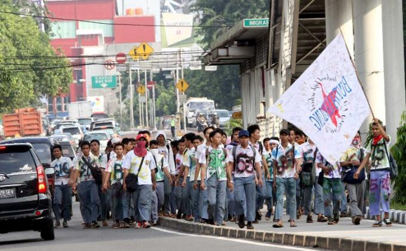

15 Kelakuan Beretika Ini Sering Dilakukan, Padahal Salah!
Wahaz 19-03-2017Dalam kehidupan sehari-hari etika memang sangat penting, terutama dalam berkomunikasi karena menyangkut perasaan dan juga harga diri seseorang. Oleh karena itu tentu dong kita diharapkan dapat memahami etika-etika yang ada di lingkungan sekitar kita.
Tapi kamu tahu nggak sih guys, kalau beberapa dari kita tanpa sadar telah melakukan kesalahan dalam beretika, yang nggak kita sadari bahwa itu bisa merugikan kita, atau bahkan mengganggu orang lain.

Adab Bertamu dan Menerima Tamu
Wildan 18-03-2017Orang yang memiliki sikap yang baik atau akhlakul karimah pasti bersikap sesuai adab saat bertamu ataupun menerima tamu.

Cara Mudah Meningkatkan Kemampuan Bersosialisasi
Faishal 17-03-2017Apa pun profesi dan bidang kerja Anda, kemampuan sosialisasi sangat mutlak diperlukan. Sekalipun pekerjaan tidak mengharuskan Anda untuk bertemu dengan banyak orang, sebagai makluk sosial Anda tetap dituntut untuk mampu bersosialisasi. Sekecil apa pun lingkungan kerja, Anda tetap perlu berinteraksi dengan orang-orang di sekeliling Anda.

Kenapa Saya Harus Antri?
Wahaz 16-03-2017Mengapa mengantri lebih penting daripada matematika? kita hanya perlu melatih anak selama 3 tahun saja secara intensif untuk bisa Matematika, sementara kita perlu melatih anak hingga 12 Tahun atau lebih untuk bisa mengantri dan selalu ingat pelajaran berharga di balik proses mengantri.

Mengatasi Krisis Moral yang Mengancam Generasi Muda
Wildan 15-03-2017Dalam era globalisasi ini, semua informasi baik dalam bentuk tulisan maupun visual, mudah didapatkan, yang bersifat positif maupun negatif. Informasi yang bersifat positif menguntungkan bagi yang dapat memanfaatkannya, namun informasi negatif apabila kita tidak siap dan tidak bisa menyikapinya, maka dapat terjerumus kepada hal-hal yang dapat merugikan dirinya sendiri, keluarga dan negara.
Membiasakan Diri Dengan Kata: Tolong, Maaf dan Terimakasih
Faishal 14-03-2017Seiring berjalannya waktu ada banyak hal yang telah berubah. Ada yang timbul dan ada yang tenggelam. Banyak sesuatu yang tidak kita mengerti termasuk kosa kata baru yang hadir dengan sendirinya yang kadang kita tidak tahu artinya dan malah terlalu sering kita pakai dalam kehidupan sehari-hari dan justru kosa kata lama yang seharusnya selalu kita pakai, malah kita lupakan. Padahal kalau saja kita sadar arti dan pengaruhnya, banyak kosa kata yang lebih baik untuk selalu kita ucapkan dibanding "Ah baper lo!" yah sebagai contohnya kosa kata Tolong, Maaf dan Terima Kasih.
Menghilangkan Kebiasaan Datang Terlambat karena 'Jam Karet'
Wahaz 13-03-2017Budaya terlambat sudah telanjur mengakar di Indonesia. Masyarakat di Indonesia saat ini seolah sudah lumrah dengan masalah keterlambatan. Bahkan Indonesia dikenal di dunia internasional dengan 'jam karet' karena seringkali tidak dapat tepat waktu.
Menyontek, hal wajib yang harus dilakukan?
Wildan 12-03-2017Budaya menyontek di Indonesia memang sudah menjadi hal yang tidak tabu lagi dan dianggap sebagai kebiasaan yang wajar-wajar saja karena tidak jelas hukumnya. Di Indonesia juga sepertinya sudah terbiasa menyontek dengan bermacam-macam cara.
Hati-Hati! 10 Ucapan Sederhana yang Kita Pakai Sehari-Hari Ini, Sebenarnya Rasis Berat
Faishal 11-03-2017Kamu pasti sudah nggak asing lagi dengan isu yang satu ini. Sedikit banyak, kamu juga pasti pernah mendengar sejarah tentang penindasan kaum imigran kulit hitam oleh kulit putih di Amerika. Kamu juga pasti pernah membaca tentang Apartheid, sistem yang baru dihapuskan dari pemerintahan Afrika Selatan di tahun 1990.
Takut Interupsi? Coba Lakukan Tips ini
Faishal 10-03-2017Umumnya, rapat melalui telepon bisa berlangsung menyebalkan, dari satu orang yang lupa mematikan mikrofonnya ketika sedang menyiram toilet, hingga orang yang tiba-tiba bergabung di tengah rapat dan bertanya hal yang sudah dijawab sebelumnya.Dan ada juga orang yang sambungan teleponnya terputus - sehingga terpaksa kita harus mendengarkan nada sambung yang mengganggu.